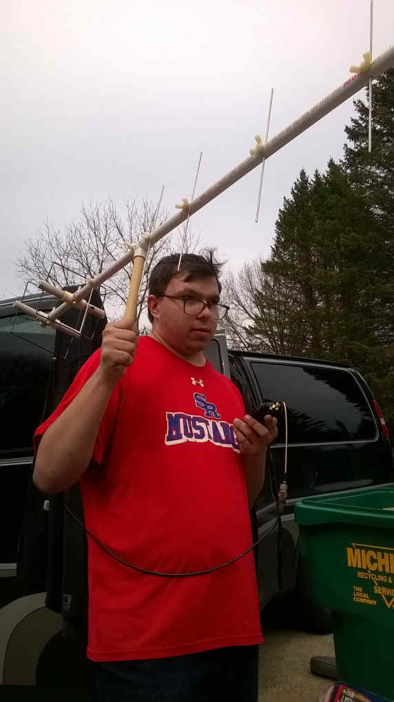
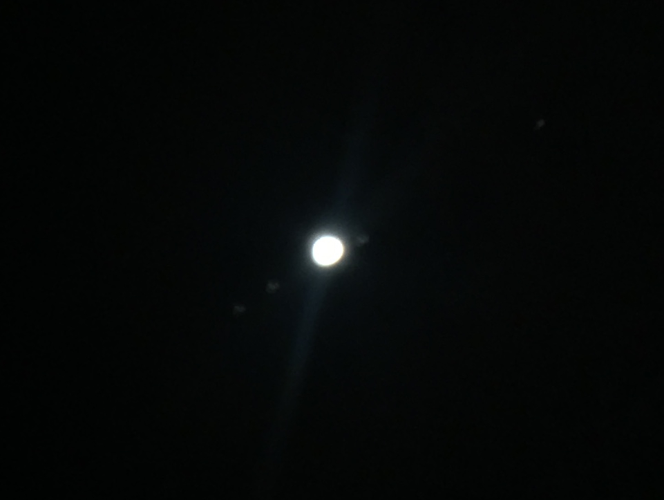
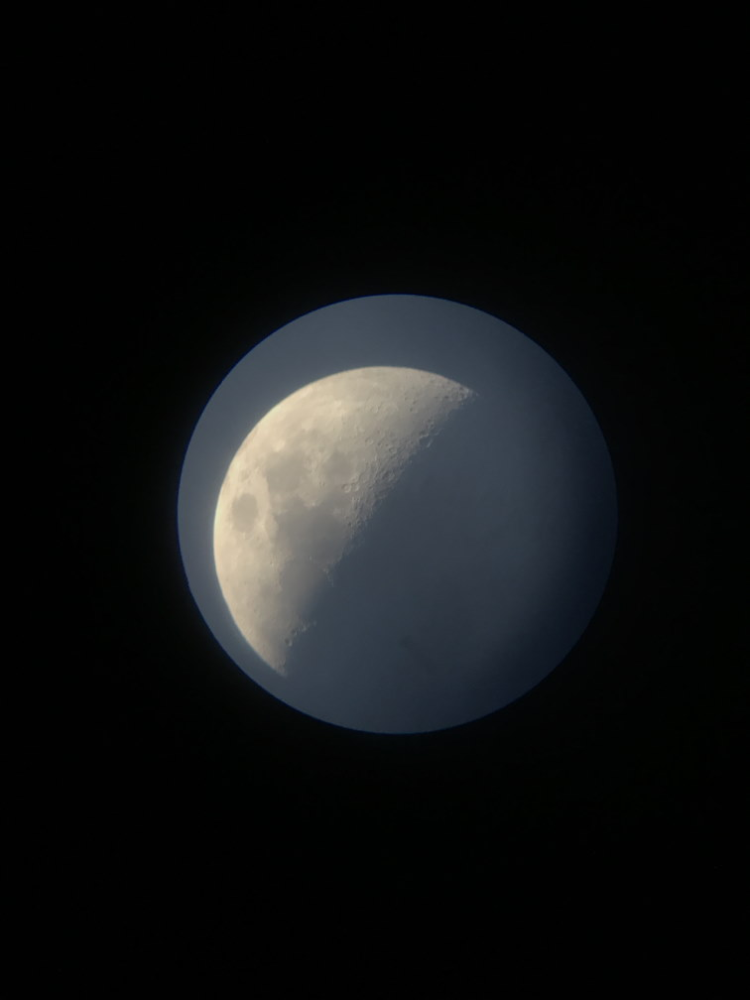
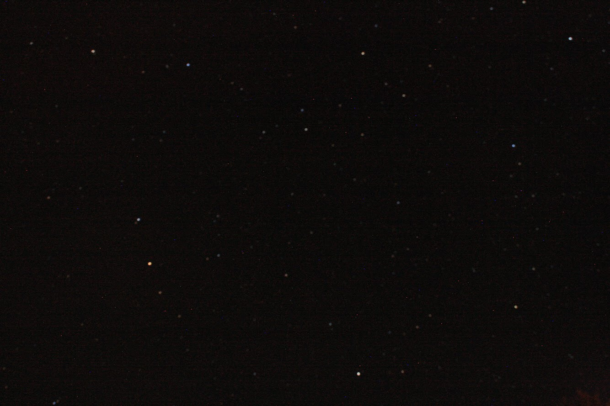
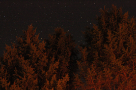
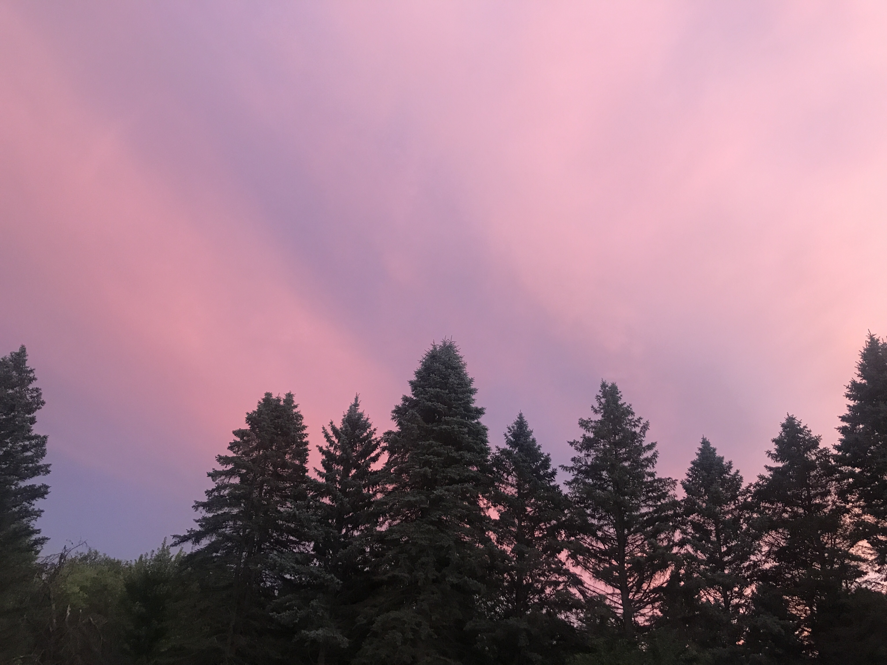

-
Amateur Radio
Also known as Ham Radio.
Amateur Radio is a part of the FCC's rules that allow individuals access to spcific ranges of frequences, also know as bands, to speak and/or exchange information on.
I currently have what is know as a General Class license. This gives be access to the HF bands which extend from 135.7 Khz to 29.7 Mhz.
I also have access to frequencise above 50Mhz all the way up any frequency above 275 Ghz.

This table from the ARRL shows all the bands available for use by US Amateur Radio users.
A picture of an antenna I had setup in June is below.

-
Amateur Radio Satellites
There are a number of AMateur Radio satellites in orbit that I try and operate on or recieve.
 -
Using my telescope
I have a small telescope in Michigan that I grabaged picked from the side of the road.
I use it to look at the moon and stars. Sometimes even the sun.
Below are a few images from it. That I took using my phone to the eye piece.
 
-
Taking pictures of the sky
Mostly I take picutres of the night sky. Making Star Scapes using long exposure on a Cannon Rebel SX camera.
Below is a few images I took.
 I have also taken a few images at other times of the day.
Below are two images I took on August 8th 2013 around 8:00 PM at Navy Pier
-
Photo Editing
I do most of my photo edititng from the command line using python and Pillow.
Below are a few examples of images I have edited.
-
Programming
I program alot in the following programming languages.
- Python
- Java
- Javascript
- C for Arduino